Underworld Evolution: Tareas de Administración de Red en el Inframundo
En esta práctica, realizaremos UNDERWORLD EVOLUTION de manera completa. UNDERWORLD ha evolucionado mucho en los últimos meses, por lo que debes realizar tareas de administración de la red para afrontar la nueva situación.
Situación Actual:
- Se ha descubierto Internet en el Inframundo.
- Cada uno de los submundos (vampiros, licántropos, hombres lobo y humanos) se conecta a un router que los enlaza con uno de los dos grandes routers que conforman la Internet de Underworld: Marcus (para humanos y vampiros) y Alexander (para hombres lobo y licántropos). Marcus y Alexander están interconectados.

Tareas a Realizar:
-
Sustituir los Routers CISCO: Reemplaza en la infraestructura de red los routers CISCO por máquinas Linux siguiendo el esquema de la figura.
-
Configurar las Máquinas Linux: Asegúrate de configurar adecuadamente las máquinas Linux para que funcionen como routers.
-
Crear Tablas de Enrutamiento: Crea las tablas de enrutamiento necesarias para permitir la comunicación entre todas las máquinas. Ten en cuenta que las redes internas utilizarán direcciones privadas, mientras que en Internet se utilizarán direcciones públicas.
-
Configurar Cortafuegos:
- Los VAMPIROS no podrán comunicarse con el resto de especies.
- Los HOMBRES LOBO y los LICÁNTROPOS podrán comunicarse entre sí, pero no con el resto de especies.
- Los HUMANOS tampoco podrán comunicarse con el resto de especies.
-
Configurar el Servicio DHCP: Configura el servicio DHCP de acuerdo a las condiciones que tenían los hombres lobo y los licántropos cuando se usaban routers CISCO.
-
Configurar Reglas en los Cortafuegos:
- Desde HUMANLAND, asegúrate de que IT KNIGHT pueda seguir comunicándose con sus dos vampiras favoritas, SONJA y SELENE.
-
Montar un Servidor Web en HUMANLAND: Realiza las configuraciones necesarias para montar en HUMANLAND un servidor web accesible desde cualquier parte de UNDERWORLD.
Tras leer todo el enunciado, estamos listos para comenzar con Underworld Evolution. 🙂
1.- Ejercicio 1
1. Sustituir en la infraestructura de red los routers CISCO por máquinas Linux siguiendo el esquema de la figura.
Simplemente montamos el esquema que nos muestra la foto, pero cambiamos los VPCS por Linux para ser más fáciles a la hora de manipular los servicios ssh.
El esquema se verá de esta manera:

Las Ips de los PCS y de las interfaces de los routers está adjunta en la foto.
2.- Ejercicio 2
2. Configurar adecuadamente las máquinas Linux para que funcionen como routers.
En este apartado lo que haremos será, colocar las IPS de la máquinas y de las interfaces de los routers correctamente y posteriormente transformar las máquinas Linux en routers. Este último paso, deberemos activar el bit de forwarding en los 4 routers.
Por ello, primero deberemos configurar las IP en las máquinas Debian mediante el directorio /etc/network/interfaces. Cuando ya esté modificamos, guardamos y salimos de este fichero. Para terminar, deberemos tirar y subir las tarjetas con los comandos siguientes:
sudo ifdown [nombre_tarjeta_red]
sudo ifup [nombre_tarjeta_red]
Tras esta breve explicación os mostraré captura de la configuración de las interfaces:
PC1: 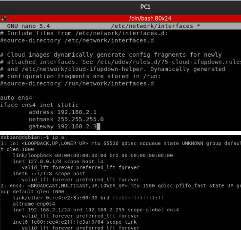
PC2: 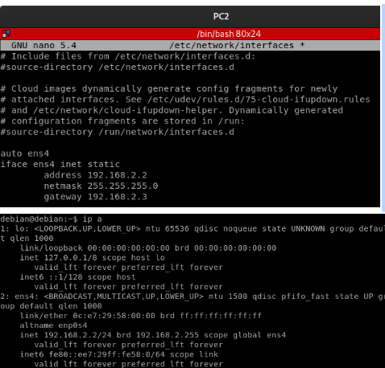
PC3: 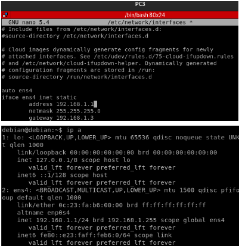
PC4: 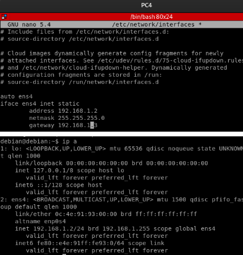
PC5: 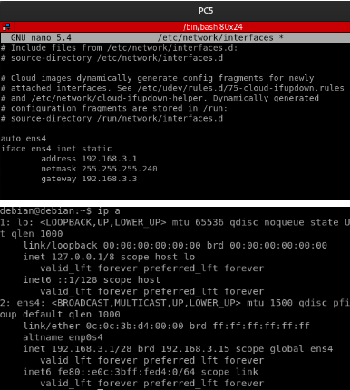
PC6: 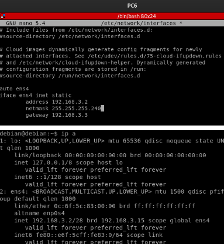
PC7: 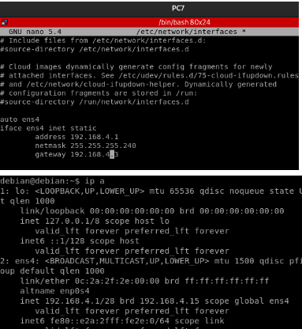
PC8: 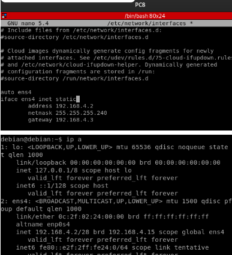
R1: 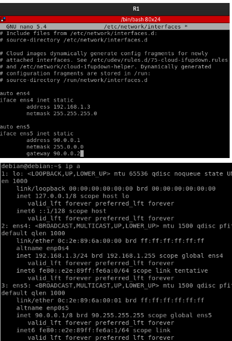
R2: 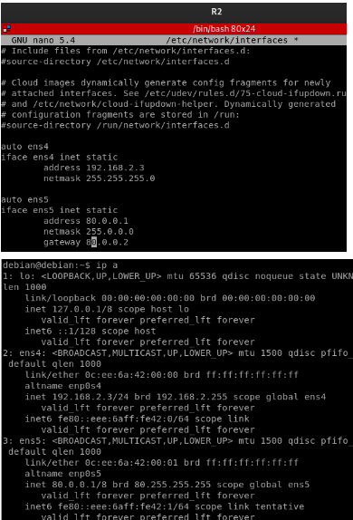
R3: 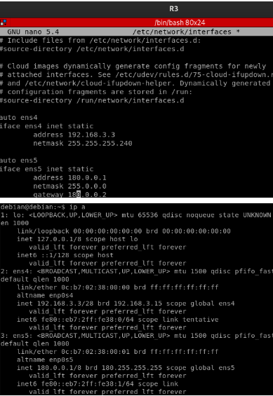
R4: 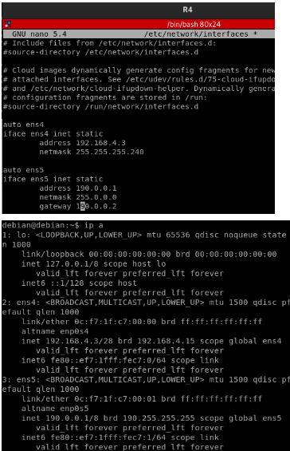
MARCUS: 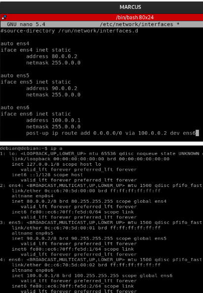
ALEXANDER 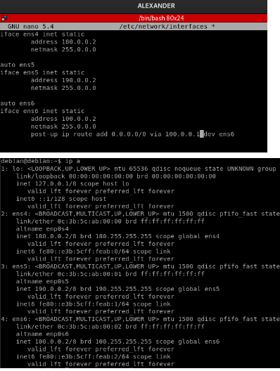
Con esto, ya tendremos configuradas las IPs de las máquinas e interfaces de los routers. Entonces, deberemos transformar los PC de Debian que queramos que sean router con los siguientes comandos (lo haremos con el router 1 para hacer la prueba). Previamente deberemos ver si está el bit de forwarding encendido, esto se verá con el siguiente comando. cat /proc/sys/net/ipv4/ip_forward Si nos muestra un 1, es que estará activado este bit y será un router configurado en un sistema Debian. Si, por lo contrario, nos muestra un 0, es que está bit no estará activado y actuará como si fuese un PC normal con un sistema operativo basado en Debian. En nuestro caso en el router 1, nos vendrá que está apagado.
Si no está activado, hacemos lo siguiente:
sudo su
echo '1' > /proc/sys/net/ipv4/ip_forward
cat /proc/sys/net/ipv4/ip_forward
Y con esto nuestra máquina Debian estará configurada para ser un router. Este paso lo deberemos hacer con todas las máquinas que queramos convertir a routers y por ello estas son:
R1, R2, R3, R4, MARCUS y ALEXANDER.
Y con esto ya habremos acabado este segundo apartado.
3.- Ejercicio 3
3. Crear las tablas de enrutamiento necesarias para que todas las máquinas se comuniquen con todas en principio, teniendo en cuenta que las redes internas tendrán direcciones privadas y en Internet tendremos direcciones públicas.
Para este apartado nos basaremos en el enrutamiento de las redes con ip públicas entre los routers y MARCUS y ALEXANDER que son los routers que están en medio de la conexión entre redes privadas y públicas.
Previamente, nos vamos a centrar en el enrutamiento de los routers R1, R2, R3 y R4 ya que solo tendrán una ruta por defecto para ir a los routers centrales (MARCUS y ALEXANDER).
R1:
| Origen | Destino | Interfaz |
|---|---|---|
| 0.0.0.0 | 90.0.0.2 | ens5 |
R2:
| Origen | Destino | Interfaz |
|---|---|---|
| 0.0.0.0 | 90.0.0.2 | ens5 |
R3:
| Origen | Destino | Interfaz |
|---|---|---|
| 0.0.0.0 | 180.0.0.2 | ens5 |
R4:
| Origen | Destino | Interfaz |
|---|---|---|
| 0.0.0.0 | 190.0.0.2 | ens5 |
Y las tablas de enrutamiento de MARCUS y ALEXANDER.
MARCUS
| Origen | Destino | Interfaz |
|---|---|---|
| 80.0.0.0 | 0.0.0.0 | ens4 |
| 90.0.0.0 | 0.0.0.0 | ens5 |
| 100.0.0.0 | 0.0.0.0 | ens6 |
| 180.0.0.0 | 100.0.0.2 | ens6 |
| 190.0.0.0 | 100.0.0.2 | ens6 |
| 0.0.0.0 | 100.0.0.2 | ens6 |
ALEXANDER
| Origen | Destino | Interfaz |
|---|---|---|
| 80.0.0.0 | 100.0.0.1 | ens6 |
| 90.0.0.0 | 100.0.0.1 | ens6 |
| 100.0.0.0 | 0.0.0.0 | ens6 |
| 180.0.0.0 | 0.0.0.0 | ens4 |
| 190.0.0.0 | 0.0.0.0 | ens5 |
| 0.0.0.0 | 100.0.0.1 | ens6 |
Tras esto, entramos en el modo configuración con los siguientes comandos para configurar el enrutamiento.
sudo su
ip route: para ver las rutas
ip r delete [red_local] [mascara_red] via [ip_interfaz_destino] dev [interfaz]
ip r add [red_local] [mascara_red] via [ip_interfaz_destino] dev [interfaz]
R1: 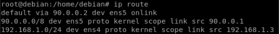
R2: 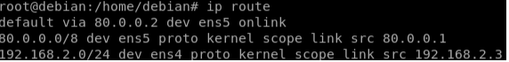
R3: 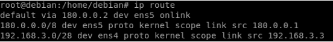
R4: 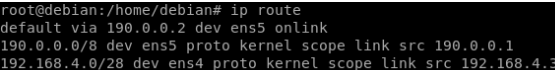
MARCUS: 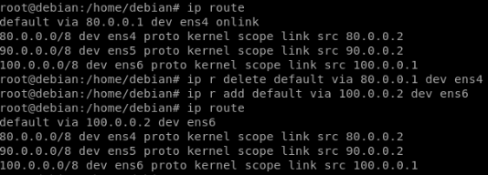
ALEXANDER: 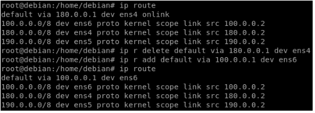
Para comprobar su correcto enrutamiento, voy a hacer un ping desde el router 1 con ip 90.0.0.1 hacia los routers:
R2: 80.0.0.1 R3: 190.0.0.1 R4: 180.0.0.1
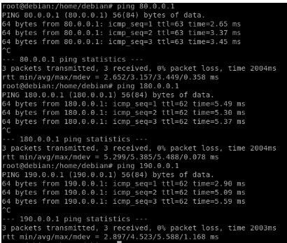
MARCUS y ALEXANDER no hace falta ya que si llega a los routers R3 y R4 es porque funciona correctamente.
Tras esto, deberemos configurar el SNAT y DNAT de los routers R1, R2, R3 y R4 para poder pasar de las redes privadas a redes públicas para poder hacer peticiones a las otras máquinas.
Además como vamos a configurar el SNAT y DNAT para tener varios servidores ssh, deberemos tocar el siguiente fichero de configuración con el siguiente comando: nano /etc/ssh/sshd_config Cuando ya entramos, buscamos la línea que especifica el puerto en el que el servicio SSH escucha actualmente y la modificamos de esta manera:
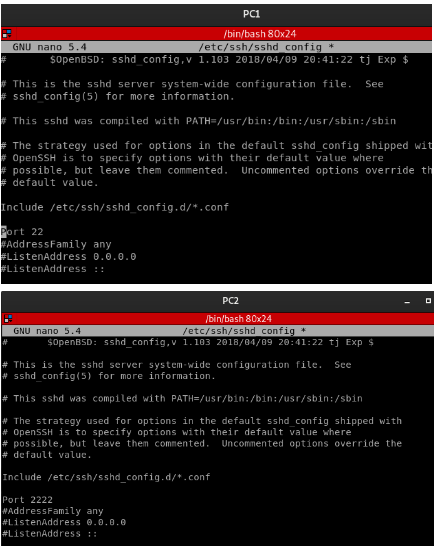
En este caso, lo estoy modificando del PC1 y los pcs impares tendrá el puerto 22 y los pcs impares tendrán el puerto 2222 pero debemos configurar en los 8 PC menos MARCUS y ALEXANDER. Además, he añadido otro puerto para los DNAT para que pueda haber más de un servidor ssh.
Tras esto, guardamos los cambios en el archivo y salimos del editor. Posteriormente, reiniciamos el servicio SSH para que los cambios surtan efecto con el siguiente comando:
sudo systemctl restart sshd.service
Una vez que haya completado estos pasos, debería poder conectarse al servicio SSH en el router Debian utilizando cualquiera de los puertos que haya especificado en el archivo de configuración. Por ejemplo, si agregó el puerto 2222, puede conectarse al servicio SSH utilizando ssh -p 2222 usuario@direccion_ip .
ESTO SE DEBE HACER EN LOS 8 PC.
Tras esto, comenzamos con los comandos de SNAT y DNAT. Para ello utilizaremos los siguientes comandos:
- R1 (SNAT y DNAT):
· iptables -t nat -A POSTROUTING -s 192.168.1.0/24 -o ens5 -j SNAT --to 90.0.0.1
· iptables -t nat -A PREROUTING -p tcp --dport 22 -i ens5 -j DNAT --to 192.168.1.1
· iptables -t nat -A PREROUTING -p tcp --dport 2222 -i ens5 -j DNAT --to 192.168.1.2
- R2 (SNAT y DNAT):
· iptables -t nat -A POSTROUTING -s 192.168.2.0/24 -o ens5 -j SNAT --to 80.0.0.1
· iptables -t nat -A PREROUTING -p tcp --dport 22 -i ens5 -j DNAT --to 192.168.2.1
· iptables -t nat -A PREROUTING -p tcp --dport 2222 -i ens5 -j DNAT --to 192.168.2.2
- R3 (SNAT y DNAT):
· iptables -t nat -A POSTROUTING -s 192.168.3.0/28 -o ens5 -j SNAT --to 180.0.0.1
· iptables -t nat -A PREROUTING -p tcp --dport 22 -i ens5 -j DNAT --to 192.168.3.1
· iptables -t nat -A PREROUTING -p tcp --dport 2222 -i ens5 -j DNAT --to 192.168.3.2
- R4 (SNAT y DNAT):
· iptables -t nat -A POSTROUTING -s 192.168.4.0/28 -o ens5 -j SNAT --to 190.0.0.1
· iptables -t nat -A PREROUTING -p tcp --dport 22 -i ens5 -j DNAT --to 192.168.4.1
· iptables -t nat -A PREROUTING -p tcp --dport 2222 -i ens5 -j DNAT --to 192.168.4.2
Tras esto, estos comandos los guardamos en un script que ejecutará todas las sentencias. Crearemos un archivo con el comando sudo nano reglas.sh y metemos estos comandos. Este contenido se hará en los 4 routers respectivamente.
Previamente antes de meter estos comandos, deberemos añadir los siguientes comandos que son los siguientes:
iptables -t nat -F
iptables -F
Estos comandos borrarán todas las reglas existentes o presentes en las máquinas.
Para ejecutar el script en cada una de las máquinas, deberemos cambiar los permisos al fichero previamente con el comando chmod u+x reglas.sh que es el fichero del script. Tras esto, ejecutamos el script con el siguiente comando ./reglas.sh y se reproducirá correctamente.
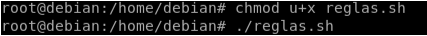
Y con el SNAT y DNAT activado con el puerto 22 (que es el del servicio ssh), podremos hacer ssh a la máquina 7 desde la máquina 1 correctamente. Aplicaremos los siguientes comandos:

Para comprobar el SNAT y DNAT, deberemos hacer una conexión ssh a la ip pública del router 4 desde el PC1 y nos entrará en el PC7 ya que en el puerto del servicio es el 22, estaba primero la del PC7. Con esto ya habría acabado el ejercicio 3.
4.- Ejercicio 4
4. Configurar los cortafuegos necesarios en los routers para que:
Los VAMPIROS no puedan comunicarse con el resto de especies. Los HOMBRES LOBO y los LICÁNTROPOS, dado que no son tan repulsivos cuando se cruzan, podrán comunicarse entre sí. Con el resto de especies no tendrán comunicación. HUMANOS tampoco podrán comunicarse con el resto de especies.
Primero de todo, os voy a comentar, con mis palabras, que es un cortafuego y para qué sirve ya que es un concepto nuevo para mi.
Un cortafuegos (firewall en inglés) es un sistema de seguridad diseñado para proteger una red de computadoras de amenazas externas, como ataques de hackers, virus informáticos, spam, entre otros. El cortafuegos actúa como una barrera entre la red interna y el mundo exterior, controlando el tráfico que entra y sale de la red. Puede bloquear o permitir el acceso a ciertos recursos o aplicaciones, dependiendo de la configuración establecida por el administrador de la red Para la configuración de cortafuegos se hará de la siguiente manera:
Primero, deberemos habilitar los servicios según sus puertos que queramos utilizar con los comandos iptables (explicaré posteriormente). Segundo, deberemos poner una política de acceso DROP para que no pase ni llegue nada a la red local.
Con esto, en los apartados de humanos y vampiros simplemente hay que emplear una política de acceso DROP con los siguientes comandos:
HUMALAND (R1):
iptables -P FORWARD DROP
TRANSILVANIA(R2):
iptables -P FORWARD DROP
Además, guardo ambos comandos en el script que he creado anteriormente. Para comprobar su correcto funcionamiento, deberemos hacer ssh desde una máquina de afuera como por ejemplo PC5 a la ip pública de los routers. Tras esto, no debería hacernos la conexión ssh.
Con esto ya habríamos cortado el tráfico a los humanos y vampiros. Para lo siguiente que es poder poner una red para los licántropos y los hombres lobo debemos seguir los siguientes comandos:
Primero, deberemos denegar todo el tráfico por defecto con los siguientes comandos:
LICANLAND(R3):
iptables -P FORWARD DROP
WOLFLAND(R4):
iptables -P FORWARD DROP
Y segundo, deberemos aplicar los siguientes comandos de iptables para que no lleguen mensajes de los routers 1 y 2. Esto lo haremos con los siguientes comandos:
LICANLAND(R3):
iptables -A FORWARD -s 192.168.3.0/28 -d 190.0.0.1 -i ens4 -o ens5 -j ACCEPT
iptables -A FORWARD -s 190.0.0.1 -d 192.168.3.0/28 -i ens5 -o ens4 -j ACCEPT
WOLFLAND(R4):
iptables -A FORWARD -s 192.168.4.0/28 -d 180.0.0.1 -i ens4 -o ens5 -j ACCEPT
iptables -A FORWARD -s 180.0.0.1 -d 192.168.4.0/28 -i ens5 -o ens4 -j ACCEPT
Tras esto, ejecutamos el script nuevo con las nuevas modificaciones. Para comprobar su correcto funcionamiento, hacemos ssh desde el PC5 a la ip pública router 4 (190.0.0.1) y comprobamos que hace ssh correctamente con los 2 puertos 22 y 2222 y vemos que entra en las 2 máquinas.
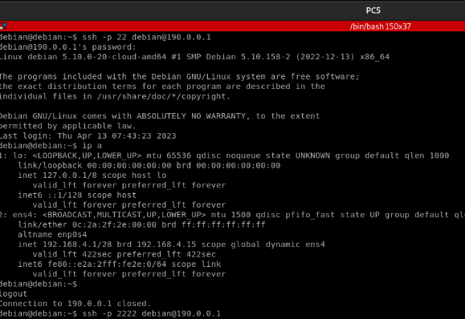 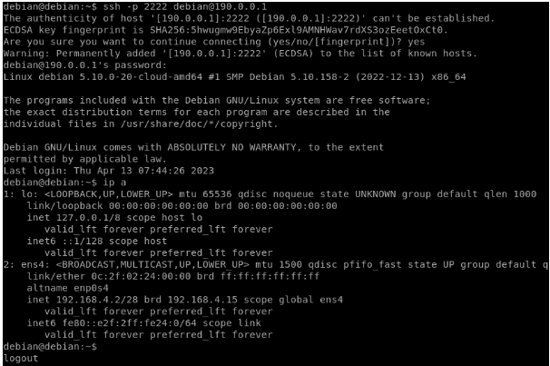
Con esto ya habremos configurado los correspondientes firewalls.
5.- Ejercicio 5
5. Configurar el servicio DHCP que tenían los hombres lobo y los licántropos en las mismas condiciones que tenían cuando se usaban routers CISCO.
En este apartado, deberemos configurar el servidor de DHCP para los routers R3 y R4. Para ello, tenemos que conectar una nube a cada servidor y se verá de esta manera:
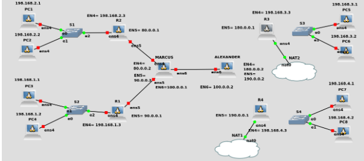
Tras esto, para poder configurarlo, deberemos seguir los siguientes comandos:
sudo apt update
sudo apt install isc-dhcp-server
Esto lo haremos en los routers R3 y R4 por igual.
Con esto instalado, volvemos a conectarlos configurando de nuevo la interfaces como las teníamos. Cuando terminemos configuramos el fichero /etc/dhcp/dhcpd.conf y modificamos añadiendo al final lo siguiente:
R3: 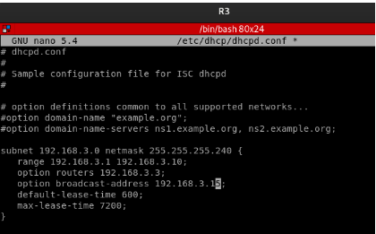
R4: 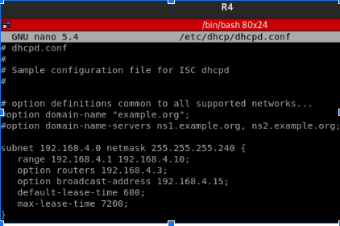
Esto lo haremos en los routers y guardamos dichos cambios. Tras esto, entramos en /etc/default/isc-dhcp-server y modificamos el último apartado donde pone INTERFACES=”” y añadimos entre de las comillas el nombre de la interfaz de la puerta de enlace. En nuestro caso es ens4 y se verá de la siguiente manera:
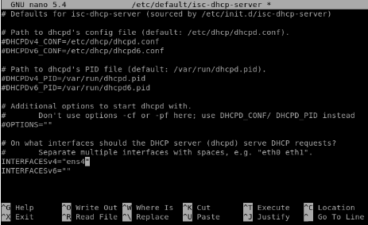
Por último, guardaremos esto cambios reiniciando el sistema con los siguientes comandos y comprobando que están activos:
sudo systemctl restart isc-dhcp-server.service
sudo systemctl status isc-dhcp-server.service
Para comprobar que esto funciona, nos vamos a las máquinas de PC5, PC6, PC7 y PC8 y configuramos la tarjeta ens4 que es la de ip estática y la ponemos de la siguiente manera para que coja de dhcp en estas 4 máquinas (en este ejemplo uso PC5): 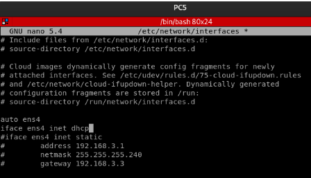
Restauramos la tarjeta y nos debería mostrar con el comando ip a la ip puesta por dhcp: 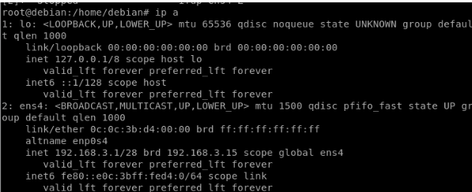
Me da la 192.168.3.1 porque es la primera en el rango especificado cuando tocamos el fichero de configuración llamado /etc/dhcp/dhcpd.conf. Esto lo deberemos hacer con los PC que comenté anteriormente (5,6,7 y 8). Con esto ya habríamos acabado con este apartado.
6.- Ejercicio 6
6. Configurar en los cortafuegos las reglas necesarias para que, desde HUMANLAND, IT KNIGHT siga comunicándose con sus dos vampiras favoritas (SONJA Y SELENE).
Para este ejercicio utilizaré las máquinas PC1, PC2 y PC3 serán SONJA, SELENE y IT KNIGHT respectivamente. Por ello, el esquema se verá de esta manera:
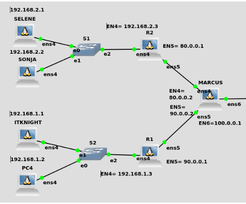
Para esto, deberemos configurar los comandos entre SELENE y SONJA con IT KNIGHT tenemos que saber que harán falta 4 comandos para poder configurar que SELENE y IT KNIGHT se conecte desde uno a otro. Esto se deberá hacer otras 4 veces para que se pueda hacer recíprocamente y saldrán en total 8 comandos. Si además le sumamos que tenemos que repetirlo con SONJA, son 16 comandos finalmente.
Con esto, comenzamos con los comandos:
De IT KNIGHT a SELENE en
R1:
iptables -A FORWARD -s 192.168.1.1 -d 80.0.0.1 -i ens4 -o ens5 -p tcp --dport 22 -j ACCEPT
iptables -A FORWARD -s 80.0.0.1 -d 192.168.1.1 -i ens5 -o ens4 -p tcp --sport 22 -j ACCEPT
De IT KNIGHT a SONJA en
R1:
iptables -A FORWARD -s 192.168.1.1 -d 80.0.0.1 -i ens4 -o ens5 -p tcp --dport 2222 -j ACCEPT
iptables -A FORWARD -s 80.0.0.1 -d 192.168.1.1 -i ens5 -o ens4 -p tcp --sport 2222 -j ACCEPT
De IT KNIGHT a SELENE en
R2:
iptables -A FORWARD -s 90.0.0.1 -d 192.168.2.1 -i ens5 -o ens4 -p tcp --dport 22 -j ACCEPT
iptables -A FORWARD -s 192.168.2.1 -d 90.0.0.1 -i ens4 -o ens5 -p tcp --sport 22 -j ACCEPT
De IT KNIGHT a SONJA en
R2:
iptables -A FORWARD -s 90.0.0.1 -d 192.168.2.2 -i ens5 -o ens4 -p tcp --dport 2222 -j ACCEPT
iptables -A FORWARD -s 192.168.2.2 -d 90.0.0.1 -i ens4 -o ens5 -p tcp --sport 2222 -j ACCEPT
----------------------------------------------------------------------------------------------------------------------
De SELENE Y SONJA a IT KNIGHT en
R1:
iptables -A FORWARD -s 80.0.0.1 -d 192.168.1.1 -i ens5 -o ens4 -p tcp --dport 22 -j ACCEPT
iptables -A FORWARD -s 192.168.1.1 -d 80.0.0.1 -i ens4 -o ens5 -p tcp --sport 22 -j ACCEPT
De SELENE a IT KNIGHT en
R2:
iptables -A FORWARD -s 192.168.2.1 -d 90.0.0.1 -i ens4 -o ens5 -p tcp --dport 22 -j ACCEPT
iptables -A FORWARD -s 90.0.0.1 -d 192.168.2.1 -i ens5 -o ens4 -p tcp --sport 22 -j ACCEPT
De SONJA a IT KNIGHT en
R2:
iptables -A FORWARD -s 192.168.2.2 -d 90.0.0.1 -i ens4 -o ens5 -p tcp --dport 22 -j ACCEPT
iptables -A FORWARD -s 90.0.0.1 -d 192.168.2.2 -i ens5 -o ens4 -p tcp --sport 22 -j ACCEPT
Tras poner estas reglas y ejecutarlas para tenerlas en el sistema, tendremos que hacer las pruebas correspondientes.
Desde IT KNIGHT a SELENE y SONJA: 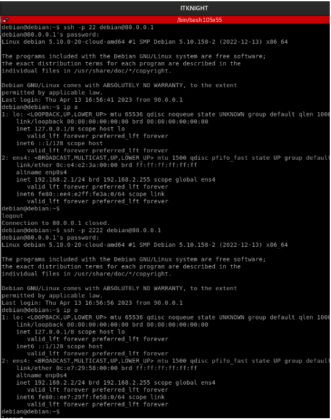
Desde SELENE a IT KNIGHT y SONJA a IT KNIGHT 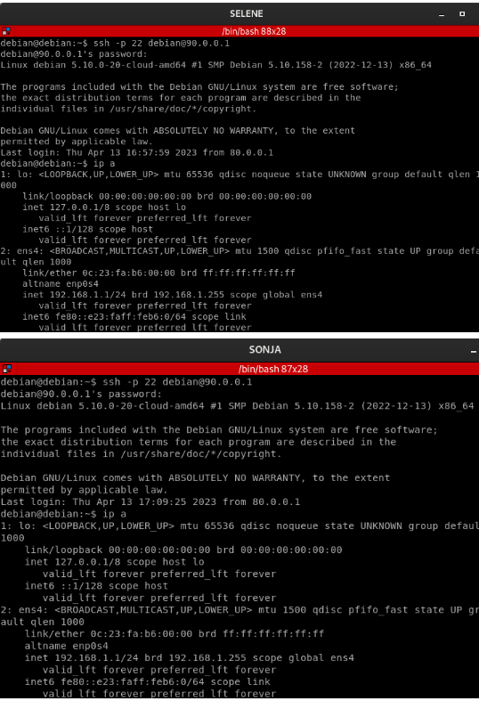
Con esto, ya hemos acabado este apartado 6.
7.- Ejercicio 7
7. Realiza las configuraciones necesarias para montar en HUMANLAND un servidor web accesible desde cualquier parte de UNDERWORLD.
Previamente, debemos instalar el servicio web y para ello previamente ponemos una máquina con una nube NAT al servidor web que hemos puesto nuevo. 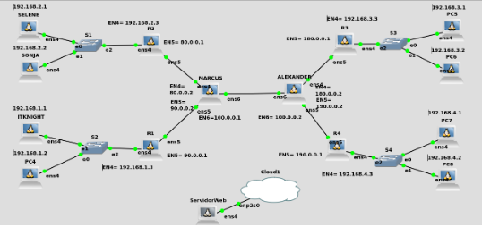
Posteriormente a esto, deberemos instalar el servidor web que vamos a poner en la propia máquina. Cuando esto ocurra, deberemos configurar la tarjeta ens4 por dhcp para poder tener acceso a internet. Esto lo hacemos modificando el fichero de /etc/network/interfaces de la manera anterior con la interfaz con DHCP.
Para que se transforme en un servidor web con el siguiente comando:
sudo apt update (actualizamos el sistema que tardará un rato)
sudo apt install apache2
Gracias a estos comandos, restauramos y vemos que los servicios de apache están perfectamente configurados. Esto se hace con estos comandos:
sudo systemctl restart apache2
sudo systemctl status apache2
Con esto, ya tenemos configurado el servidor web.
Para hacer este apartado, deberemos poner una máquina Debian en HUMANLAND. El esquema se verá de esta manera: 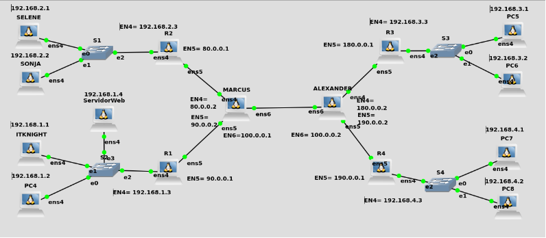
Para ello la configuramos con la ip 192.168.1.4 con netmask 24 con gateway 192.168.1.3 en el fichero /etc/network/interfaces al servidor web.
Tras esto, deberemos configurar que este servidor pueda conectarse con los mundos de los vampiros, licántropos y hombres lobo. Para ello, aceptaremos el tráfico del puerto 80 que es el servidor web.
Para ello en el router 1, deberemos configurar una regla de DNAT para el puerto 80 para el servidor web con ip 192.168.1.4. Por ello estos son los comandos que tenemos que emplear en cada uno de los routers (guardando los comandos en el script creado).
R1 HUMANLAND:
iptables -t nat -A PREROUTING -p tcp --dport 80 -i ens5 -j DNAT --to 192.168.1.4
iptables -A FORWARD -s 192.168.1.4 -d 0.0.0.0/0 -i ens4 -o ens5 -p tcp --sport 80 -j ACCEPT
iptables -A FORWARD -s 0.0.0.0/0 -d 192.168.1.4 -i ens5 -o ens4 -p tcp --dport 80 -j ACCEPT
R2 TRANSILVANIA:
iptables -A FORWARD -s 192.168.2.0/24 -d 90.0.0.1 -i ens4 -o ens5 -p tcp --dport 80 -j ACCEPT
iptables -A FORWARD -s 90.0.0.1 -d 192.168.2.0/24 -i ens5 -o ens4 -p tcp --sport 80 -j ACCEPT
R3 LICANTROPOS:
iptables -A FORWARD -s 192.168.3.0/24 -d 90.0.0.1 -i ens4 -o ens5 -p tcp --dport 80 -j ACCEPT
iptables -A FORWARD -s 90.0.0.1 -d 192.168.3.0/24 -i ens5 -o ens4 -p tcp --sport 80 -j ACCEPT
R4 WOLFLAND:
iptables -A FORWARD -s 192.168.4.0/24 -d 90.0.0.1 -i ens4 -o ens5 -p tcp --dport 80 -j ACCEPT
iptables -A FORWARD -s 90.0.0.1 -d 192.168.4.0/24 -i ens5 -o ens4 -p tcp --sport 80 -j ACCEPT
Con esto, implementamos los scripts y anexamos máquinas Firefox a las redes locales de TRANSILVANIA, LICANTROPOS y WOLFLAND de esta manera. 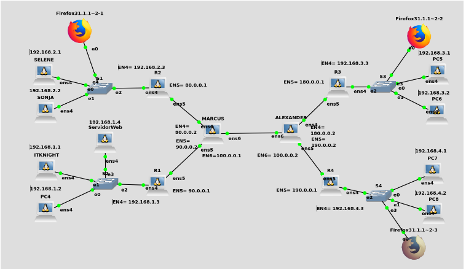
Tras esto, deberemos comprobar que está bien configurado las reglas con estas máquinas Firefox. En la máquina Firefox de TRANSILVANIA, deberemos asignar la ip y el gateway correspondiente de esta manera. Entramos en Control Panel, le damos a network y ponemos una ip privada que pertenezca a la red local y además con gateway 192.168.2.3 que es la puerta de enlace de esta red. Se verá de esta manera: 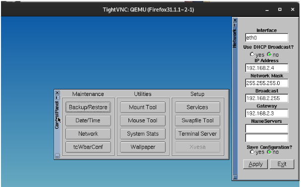
En las máquinas Firefox de LICANLAND y WOLFLAND, simplemente tenemos que poner el servicio como que coja la ip por dhcp ya que hicimos la configuración dhcp en esos servidores. 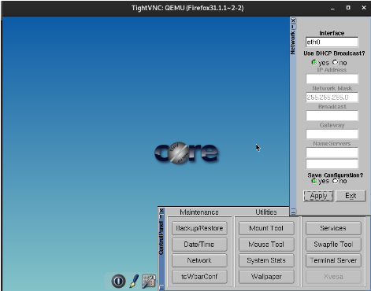
Tras esto, simplemente buscamos en nuestros buscador Firefox la ip pública del router 1 que es 90.0.0..1 y deberá salirnos el servicio web perfectamente configurado.
Firefox de R2: 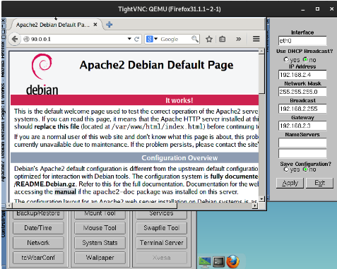
Firefox de R3: 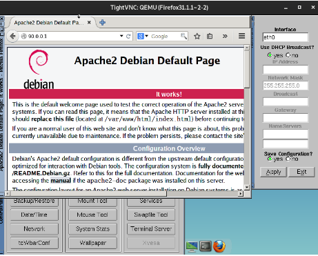
Firefox de R4: 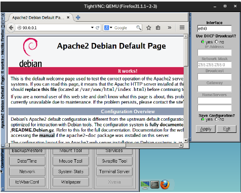
Y con esto acabamos UNDERWORLD EVOLUTION.